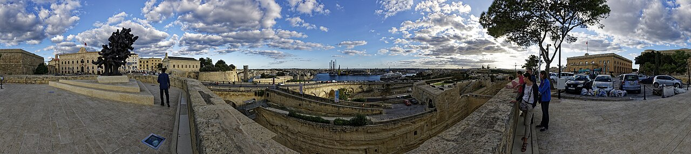

Мальта

Мальта — архипелаг размером с один хороший отпуск: три острова, семь тысяч лет истории и свет, от которого камень светится медово. Валлетта строилась рыцарями как крепость-шахматная доска: одна длинная улица, перпендикуляры, балконы с закрытыми ставнями — и вид на две гавани, где лодки пестрят, как на параде. Собор св. Иоанна снаружи суров, внутри — золочёный барокко, у которого нет конкурентов на квадратный метр. Мальтийский камень — тёплый на ощупь: дома здесь режут из известняка, как хлеб. Выезды простые: Голубой грот на утренней воде, рыболовные лодки в Марсашлокке с глазами на носу, Мдина — «тихая столица» на высоте, где вечером слышно собственные шаги. Комино — Голубая лагуна: вода цвета стекла на солнце. Кухня — тёплая средиземноморская с британским акцентом: паштицци с горошком, рагу из кролика в воскресенье и фтира с тунцом. Двуязычие наизусть: мальтийский и английский — понятно без словаря.
Что знать перед поездкой
- Голубой грот — до десяти утра
- Мдина — вечером, когда город слышен
- Паштицци — ешьте стоя у пекарни